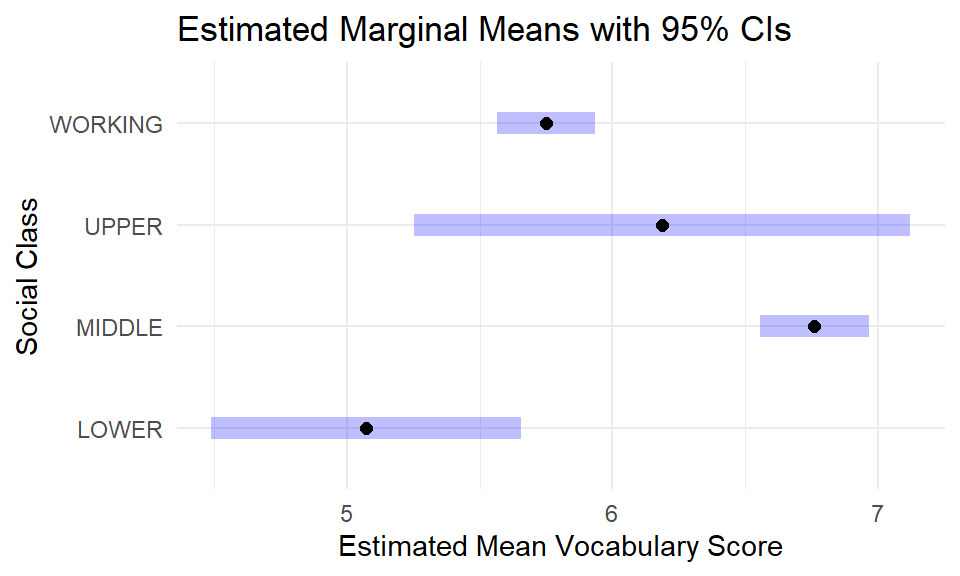

Welcome
Introduction
Welcome to this interactive tutorial on Analysis of Variance (ANOVA)! In this tutorial, you’ll learn how to compare means across multiple groups simultaneously—a powerful extension of the two-sample t-test you’ve learned previously.
We’ll work with real data from the General Social Survey to investigate an interesting question: Is there a relationship between vocabulary scores and self-identified social class?
Throughout this tutorial, you’ll not only learn the mechanics of ANOVA but also understand why we need this method and how to properly interpret and communicate results.
Learning Objectives
By the end of this tutorial, you will be able to:
- Conduct exploratory data analysis for comparing a numerical variable across multiple groups using appropriate visualizations
- State hypotheses for an ANOVA test in both words and mathematical notation
- Check conditions for ANOVA, including independence, normality, and equal variance
- Perform an ANOVA to test whether means differ across groups and interpret the F-statistic
- Interpret ANOVA results, including understanding degrees of freedom, sum of squares, and p-values
- Explain the multiple comparisons problem and why adjustments are necessary when conducting pairwise tests
- Conduct post-hoc pairwise comparisons using modern methods including Bonferroni, Holm, FDR (False Discovery Rate), and Tukey HSD adjustments
- Use the
emmeanspackage for estimating and comparing marginal means in a principled way
Introduction to the Data
Research Question
Does vocabulary score vary by social class?
This is an example of a question where we need to compare means across more than two groups. A t-test won’t work here because:
- A t-test can only compare two groups at a time
- Doing multiple t-tests (lower vs. working, lower vs. middle, etc.) creates statistical problems we’ll discuss later
- We need a method that can test all groups simultaneously
Enter ANOVA: ANalysis Of VAriance.
The Vocabulary Test: wordsum
Respondents are given a list of words and asked to choose which word comes closest to the meaning of a word provided in capital letters. Here are the 10 questions:
- SPACE (school, noon, captain, room, board, don’t know)
- BROADEN (efface, make level, elapse, embroider, widen, don’t know)
- EMANATE (populate, free, prominent, rival, come, don’t know)
- EDIBLE (auspicious, eligible, fit to eat, sagacious, able to speak, don’t know)
- ANIMOSITY (hatred, animation, disobedience, diversity, friendship, don’t know)
- PACT (puissance, remonstrance, agreement, skillet, pressure, don’t know)
- CLOISTERED (miniature, bunched, arched, malady, secluded, don’t know)
- CAPRICE (value, a star, grimace, whim, inducement, don’t know)
- ACCUSTOM (disappoint, customary, encounter, get used to, business, don’t know)
- ALLUSION (reference, dream, eulogy, illusion, aria, don’t know)
Try one! For example, is CLOISTERED closest in meaning to miniature, bunched, arched, malady, or secluded?
(The correct answer is secluded—cloistered means isolated or shut away from the world, often in a religious context.)
Why vocabulary scores? Vocabulary tests are commonly used as proxy measures for educational attainment and verbal cognitive ability. The GSS uses this 10-word test to measure respondents’ verbal skills in a quick, standardized way.
Distribution of Vocabulary Score
Let’s start by looking at the overall distribution of vocabulary scores, ignoring social class for now:
ggplot(data = gss, aes(x = wordsum)) +
geom_histogram(binwidth = 1)The distribution of vocabulary scores is roughly symmetric and centered around 6. Scores range from 0 to 10, though very low and very high scores are uncommon. There’s a slight left skew, but nothing dramatic. Most people score between 4 and 8 on this test.
Making the Connection
These visualizations tell us about each variable individually, but they don’t reveal whether there’s a relationship between them.
The key question: Do vocabulary scores differ systematically across social class groups? Or is any variation we see just random noise?
To answer this, we need to:
- Visualize the relationship (next section!)
- Formalize our question as statistical hypotheses
- Check whether our data meet the conditions for ANOVA
- Conduct the analysis and interpret results
Time to dig in!
Exploratory Data Analysis
EDA: A Critical First Step
Before jumping into any statistical test, we should always visualize the data first. Visualization helps us:
- Understand the relationship between variables
- Check whether ANOVA assumptions might be reasonably met
- Develop intuition about what the statistical analysis might reveal
- Identify potential outliers or unusual patterns
Remember: Statistical tests give us precise p-values, but visualizations give us understanding. Both are essential!
Your Task: Visualizing the Relationship
Now it’s your turn to explore the data!
Create visualizations to compare vocabulary scores across social class groups.
Your task:
- Using the
gssdataset, create a histogram of vocabulary scores (wordsum) - Use an appropriate binwidth (remember: scores are whole numbers from 0-10)
- Facet the histogram by social class level (
class)
After creating the plot, carefully compare the distributions. Look at:
- Shape: Are the distributions roughly symmetric? Skewed?
- Center: Do the groups appear to have different average scores?
- Spread: Is the variability similar across groups?
- Unusual observations: Are there outliers in any group?
# Using gss, plot wordsum
ggplot(data = ___, mapping = aes(___)) +
# Add a histogram layer with appropriate binwidth
___ +
# Facet by class
facet_wrap(~___)# Hints:
# - Use `gss` as the plot's `data` argument
# - Map `x` to `wordsum` in `aes()`
# - Add a histogram layer with `geom_histogram()`
# - Vocabulary scores are whole numbers, so binwidth = 1 makes sense
# - The faceting formula is specified as `~class`# Using gss, plot wordsum
ggplot(data = gss, mapping = aes(x = wordsum)) +
# Add a histogram layer
geom_histogram(binwidth = 1) +
# Facet by class
facet_wrap(~class)What Do You Notice?
Great work! Before you move on, take a moment to carefully examine all aspects of these distributions:
Questions to consider:
- Do the distributions look roughly similar in shape across groups?
- Which group appears to have the highest average vocabulary score?
- Which group has the lowest?
- Is the spread (variability) similar across all four groups?
- Are there any obvious outliers?
These observations will be important when we check conditions for ANOVA and interpret our results!
Comparing Many Means, Visually
Let’s develop your intuition about when groups are likely to be “significantly different” from each other.
Look at the three panels below, each showing boxplots for three groups:
Key insight: Statistical significance depends on both the difference between group means and the variability within groups. Large differences with small variability → likely significant. Small differences with large variability → likely not significant.
ANOVA: The Big Picture
Why Not Just Do Multiple t-tests?
You might be wondering: We know how to compare two means with a t-test. Why can’t we just do several t-tests for every pair of social classes?
The problem: Multiple testing inflates the Type I error rate dramatically.
Let’s break this down:
- When we set α = 0.05, we’re accepting a 5% chance of a false positive (Type I error) for one test
- With 4 social classes, we’d need to do \({4 \choose 2} = \frac{4 \times 3}{2} = 6\) pairwise comparisons
- The probability of making at least one Type I error across all tests grows rapidly
The math:
If we conduct \(k\) independent tests, each at significance level α:
\[P(\text{at least one Type I error}) = 1 - (1-\alpha)^k\]
For 6 tests at α = 0.05: \[P(\text{at least one Type I error}) = 1 - (0.95)^6 \approx 0.265\]
That’s a 26.5% chance of falsely detecting a difference that doesn’t exist! This is called the multiple comparisons problem or multiple testing problem.
The solution: Use ANOVA to test all groups simultaneously with a single test that controls the overall Type I error rate at α.
How ANOVA Works
ANOVA addresses this problem by comparing two sources of variation in a single F-test:
- Between-group variation: How much do the group means differ from each other?
- Within-group variation: How much do individual observations vary within each group?
The logic:
- If group membership matters (i.e., vocabulary really does differ by class), we expect large between-group variation relative to within-group variation
- If group membership doesn’t matter, between-group variation should be similar to within-group variation (just random noise)
The test statistic is called an F-statistic:
\[F = \frac{\text{Between-group variability}}{\text{Within-group variability}} = \frac{\text{MSG}}{\text{MSE}}\]
Where: - MSG = Mean Square for Groups (between-group variance) - MSE = Mean Square Error (within-group variance)
Interpreting F:
- Large F-values (much greater than 1) suggest group means are different
- F-values near 1 suggest group means are similar (differences are just noise)
- F-values are always positive (it’s a ratio of variances)
The F-distribution helps us determine whether an observed F-value is “unusually large” if the null hypothesis were true.
Variability Partitioning
ANOVA works by partitioning (dividing up) the total variability in the response variable:
\[\text{Total Variability} = \text{Between-group Variability} + \text{Within-group Variability}\]
For our vocabulary score example:
Total variability in vocabulary scores = variance in vocabulary scores of all 795 respondents
Between-group variability = variability that can be attributed to differences in social class. This is what we’re interested in! If social class matters, this component should be large.
Within-group variability = variability attributed to factors within each social group. This is essentially “noise”—if everyone in a social class had exactly the same vocabulary score, this would be zero (but that never happens in real data!).
The key insight: We want between-group variability to be large relative to within-group variability. The F-statistic makes this comparison.
Summary of key concepts:
- Total variability is partitioned into two components:
- Between-group variability: differences attributable to the grouping variable
- Within-group variability: differences within each group (the “noise”)
- ANOVA uses a single F-test to compare all groups simultaneously
- This controls the Type I error rate (unlike doing multiple t-tests)
- Large F-statistics suggest the group means differ
Next, we’ll formalize this with hypotheses and see what an actual ANOVA looks like!
Hypotheses and the ANOVA Table
The ANOVA Table
Here’s what the parametric (theoretical) ANOVA output looks like for our vocabulary data:
aov(wordsum ~ class, gss) |>
tidy()Let’s break down each component of this output:
Row 1 (class): The “between-group” variability—variation explained by social class
Row 2 (Residuals): The “within-group” variability—unexplained variation (the “error”)
Now let’s examine each column:
Understanding Sum of Squares
The Sum of Squares (sumsq) column measures variability:
- SS for class (236.56): Variability in vocabulary scores explained by social class
- SS for Residuals (2869.80): Unexplained variability (variation within groups)
- Total SS = 236.56 + 2869.80 = 3106.36: Total variability in vocabulary scores
Sum of Squares Total (SST) is calculated as the total squared deviation from the overall mean:
\[SST = \sum_{i=1}^{n}(y_i - \bar{y})^2\]
This is similar to variance, but not divided by n.
Percentage of variability explained:
\[R^2 = \frac{SS_{\text{class}}}{SS_{\text{total}}} = \frac{236.56}{3106.36} = 0.076 = 7.6\%\]
Interpretation: About 7.6% of the variability in vocabulary scores can be explained by self-identified social class. The remaining 92.4% is due to other factors (education, age, reading habits, etc.).
Note: This R² is exactly what you’d get from a linear regression predicting wordsum from class!
Degrees of Freedom (df)
df for class: Number of groups - 1 = 4 - 1 = 3
df for Residuals: Total observations - number of groups = 795 - 4 = 791
Degrees of freedom tell us how many “independent pieces of information” we have for estimating variability.
Mean Square (meansq)
Mean Square values are the Sum of Squares divided by degrees of freedom:
\[MS = \frac{SS}{df}\]
- MSG (Mean Square Groups) = 236.56 / 3 = 78.85: Average between-group variability
- MSE (Mean Square Error) = 2869.80 / 791 = 3.63: Average within-group variability
These are variance estimates! Mean squares are how we standardize the variability measures for groups with different degrees of freedom.
The F-Statistic
The F-statistic is the ratio of between-group to within-group variability:
\[F = \frac{MSG}{MSE} = \frac{78.85}{3.63} = 21.74\]
Interpretation: The between-group variability is about 21.74 times larger than the within-group variability. This is a large ratio!
The p-value
The p-value (< 0.001) answers this question:
“If the null hypothesis were true (all group means equal), what’s the probability of observing an F-statistic this large or larger?”
Here, p < 0.001 means: extremely unlikely!
Decision: Since p-value < α (typically 0.05), we reject the null hypothesis.
Conclusion: We have very strong evidence that average vocabulary scores differ across at least one pair of social class groups.
But… we still don’t know which groups differ! That’s where post-hoc testing comes in (we’ll get there soon).
The F-Distribution
ANOVA uses the F-distribution to calculate p-values. Here’s what the F-distribution looks like for our analysis:
obs_stat <- aov(wordsum ~ class, gss) |>
tidy() |>
select(statistic) |>
slice(1) |>
pull()
set.seed(1234)
values <- tibble(
val = rf(100000, df1 = 3, df2 = 791)
)
values |>
ggplot(aes(x = val)) +
geom_density() +
xlim(c(0, 25)) +
labs(x = "F-statistic",
y = "Density",
title = "F-distribution with df1 = 3, df2 = 791") +
geom_vline(xintercept = obs_stat, color = "red", linetype = "dashed") +
annotate("text", x = obs_stat + 2, y = 0.4,
label = paste("Observed F =", round(obs_stat, 2)),
color = "red")Key features of the F-distribution:
- Always positive (it’s a ratio of two variances)
- Right-skewed
- Defined by two degrees of freedom parameters (df₁ and df₂)
- For ANOVA, we only use the upper (right) tail to calculate p-values
The red dashed line shows our observed F-statistic (21.74). It’s way out in the right tail—extremely unlikely if H₀ were true!
Conducting Your Own ANOVA
Time to put this into practice!
ANOVA for Evaluation Score vs. Professor Rank
Let’s conduct an ANOVA using different data. The evals
dataset contains course evaluation scores for professors at the
University of Texas at Austin, along with various characteristics
including their academic rank.
Research question: Is there a difference in average evaluation scores between professors of different ranks?
The rank variable has three levels: - teaching: Teaching
faculty - tenure track: Tenure-track faculty (assistant/associate
professors) - tenured: Tenured (full) professors
Your task:
- Use the
aov()function to perform an ANOVA testing whether evaluationscorediffers by professorrank - Store the result as
aov_evals_rank - Use
tidy()to view a clean summary of the ANOVA table - Interpret the results at α = 0.025 (2.5% significance level)
# Run an analysis of variance on score vs. rank
aov_evals_rank <- aov(___, data = ___)
# Tidy the model
tidy(___)# Hints:
# - Call `aov()` with a formula: response ~ grouping_variable
# - The formula should be: score ~ rank
# - Use the `evals` dataset
# - Call `tidy()` on the stored ANOVA object# Run an analysis of variance on score vs. rank
aov_evals_rank <- aov(score ~ rank, data = evals)
# Tidy the model
tidy(aov_evals_rank)Interpreting Your Results
Now that you’ve run the ANOVA, answer these questions:
- What is the F-statistic? Is it large?
- What is the p-value? Is it less than α = 0.025?
- What is your decision? Reject or fail to reject H₀?
- What is your conclusion in context? Do evaluation scores appear to differ by professor rank?
Bonus question: Would your conclusion change if you had used a 10% significance level (α = 0.10) instead?
Take a moment to write out your interpretation before moving on!
Conditions for ANOVA
Why Conditions Matter
Just like any statistical inference method, ANOVA has mathematical conditions that must be reasonably satisfied for the results to be trustworthy.
Important note: We can never mathematically “prove” conditions are perfectly met with real data. Instead, we use careful evaluation to assess whether conditions are reasonably satisfied or seriously violated.
Three Main Conditions for ANOVA
- Independence:
- Within groups: sampled observations must be independent of each other
- Between groups: the groups themselves must be independent
- Approximate normality:
- The response variable should be approximately normal within each group
- Equal variance (homoscedasticity):
- The variability should be roughly equal across all groups
Let’s examine each condition in detail and learn how to check them.
Condition 1: Independence
Within groups: Sampled observations must be independent of each other
How to verify: - ✓ Random sampling ensures independence - ✓ For experiments: random assignment helps (but consider potential relationships) - ✓ 10% rule: Each sample size should be less than 10% of its respective population - ✓ No obvious clustering or time dependencies
Between groups: Groups must be independent of each other
What to watch for: - ✗ Paired or repeated measures: Same subjects measured in multiple groups - ✗ Matched samples: Groups deliberately matched on characteristics - ✓ Different subjects in each group
For our GSS vocabulary data:
- ✓ The GSS uses random sampling → within-group independence satisfied
- ✓ Sample size (n = 795) is much less than 10% of the US adult population
- ✓ Each respondent appears in only one social class group → between-group independence satisfied
Important: This condition is always critical but sometimes difficult to verify without knowing the study design details.
Condition 2: Approximate Normality
Requirement: The response variable should be approximately normal within each group
When it matters most: When sample sizes are small (n < 30 per group)
When it matters less: When sample sizes are large, ANOVA is fairly robust to violations of normality (thanks to the Central Limit Theorem)
How to check:
- Create visualizations for each group separately:
- Histograms or density plots (check for symmetry, outliers)
- Q-Q plots (points should fall roughly on a straight line)
- Violin plots (show full distribution shape)
- Look for:
- ✓ Roughly symmetric distributions
- ✓ No extreme outliers
- ⚠ Moderate skewness is usually okay with large samples
- ✗ Severe skewness or heavy outliers in small samples
Which visualization is best for checking normality?
Condition 3: Constant (Equal) Variance
Requirement: The variability of the response variable should be roughly equal across all groups
Technical term: Homoscedasticity (homo = same, scedastic = scatter)
When it matters most: When sample sizes differ substantially between groups
When it matters less: When sample sizes are balanced (roughly equal), ANOVA is fairly robust
How to check:
- Visual inspection:
- Boxplots: Check if box heights and whisker lengths are similar
- Violin plots: Check if widths are similar
- Residual plots: Points should be equally scattered at all fitted values
- Numerical summary:
- Calculate standard deviations for each group
- Rule of thumb: Largest SD should be no more than 2× the smallest SD
- If max(SD) / min(SD) > 2, equal variance might be violated
Let’s check this condition for our vocabulary data!
Checking Equal Variance: Numerical Approach
Calculate the standard deviation of vocabulary scores within each social class group.
Your task:
- Take the
gssdataset andgroup_by()socialclass - Use
summarize()to calculate the standard deviation (sd()) ofwordsum - Store the result in a column called
sd_wordsum - Examine the results: Is the ratio of largest to smallest SD less than 2?
gss |>
# Group by class
group_by(___) |>
# Calculate the std dev of wordsum as sd_wordsum
summarize(___ = ___)# Hints:
# - Call `group_by()`, passing `class` as the argument
# - In `summarize()`, create `sd_wordsum` by calling `sd(wordsum)`
# - After running, look at the SD values:
# Is the largest about 2x the smallest or more?gss |>
# Group by class
group_by(class) |>
# Calculate the std dev of wordsum as sd_wordsum
summarize(sd_wordsum = sd(wordsum))Checking Equal Variance: Visual Approach
Standard deviations give us numbers, but visualizations help us see the variability.
Your task: Create density ridge plots to visualize the distribution of vocabulary scores across social classes.
Steps:
- Pipe the
gssdataset intoggplot() - Map
wordsumto the x-axis andclassto the y-axis inaes() - Add density ridges using
geom_density_ridges() - Examine the plot: Do the distributions have similar spread?
gss |>
# Map wordsum to the x-axis and class to the y-axis
ggplot(aes(x = ___, y = ___)) +
# Add density ridges to the plot!
geom_density_ridges()# Hints:
# - Map x = wordsum (the response variable)
# - Map y = class (the grouping variable)
# - geom_density_ridges() is already provided!
# - Look at the widths of the density curvesgss |>
# Map wordsum to the x-axis and class to the y-axis
ggplot(aes(x = wordsum, y = class)) +
# Add density ridges to the plot!
geom_density_ridges()Reflection: Is Equal Variance Satisfied?
Look at both your numerical summaries and the density ridges plot.
Questions to consider:
- Do the standard deviations differ by more than a factor of 2?
- Do the density curves have visibly different widths?
- If there are some differences, are they minor or substantial?
For our data: The standard deviations are pretty similar across groups (ranging roughly from 1.8 to 2.0), and the density curves show comparable spread. The equal variance condition appears reasonably satisfied!
Checking Conditions: Model-Based Approach
We can also check normality and equal variance using residual plots from the fitted model, similar to what we did for linear regression.
The ggfortify package makes this easy with the
autoplot() function:
autoplot(lm(wordsum ~ factor(class), gss), which = 2:3)Left plot (Q-Q plot): Checks normality of residuals
- Points should fall roughly along the diagonal line
- Our data: Mostly linear with slight deviations at the tails—normality is reasonably satisfied
Right plot (Scale-Location): Checks equal variance
- The red smoothed line should be roughly horizontal
- Points should be evenly scattered above and below
- Our data: The line is fairly flat—equal variance assumption is reasonable
Overall assessment for the vocabulary ANOVA:
- ✓ Independence: Satisfied (random sampling, large population)
- ✓ Normality: Reasonably satisfied (Q-Q plot looks good, large sample sizes)
- ✓ Equal variance: Reasonably satisfied (SDs similar, scale-location plot okay)
Conclusion: We can proceed with confidence in our ANOVA results!
Post-Hoc Testing with emmeans
The Next Question: Which Groups Differ?
We conducted our ANOVA and found a significant result (p < 0.001). This tells us that at least one social class group has a different average vocabulary score.
But which ones?
- Is lower class different from upper class?
- Is working class different from middle class?
- Are all four groups different from each other?
ANOVA doesn’t answer these questions—it only tells us “something differs somewhere.”
To answer the “which groups?” question, we need post-hoc tests (Latin for “after this”)—tests conducted after finding a significant ANOVA result.
The Multiple Comparisons Problem: Revisited
Earlier, we saw why doing multiple t-tests inflates the Type I error rate. Let’s see this more concretely.
Scenario: Imagine you’re testing 20 fair coins to see if they’re biased. For each coin, you set α = 0.05.
- For each individual coin test: 5% chance of falsely concluding it’s biased
- Across all 20 tests: You’d expect to falsely “detect” bias in about 1 coin purely by chance!
\[P(\text{at least one Type I error}) = 1 - (1-\alpha)^k\]
For our vocabulary data with 4 groups, we have \({4 \choose 2} = 6\) possible pairwise comparisons:
- Lower vs. Working
- Lower vs. Middle
- Lower vs. Upper
- Working vs. Middle
- Working vs. Upper
- Middle vs. Upper
At α = 0.05 per test: \[P(\text{at least one false positive}) = 1 - (0.95)^6 \approx 0.265\]
That’s a 26.5% chance of making at least one Type I error! Our “5% significance level” is meaningless.
The solution: Adjust our significance level to control the family-wise error rate (FWER) or false discovery rate (FDR).
Why Use emmeans?
The emmeans package (estimated
marginal means) is a modern,
principled approach to post-hoc testing. Here’s why it’s better than
doing individual t-tests:
Pools information across groups: Uses the overall MSE (pooled variance) from the ANOVA model, giving more stable estimates
Handles complex designs: Works seamlessly with unbalanced designs, covariates, and interactions
Multiple comparison adjustments: Easily implements Bonferroni, Holm, Tukey, FDR, and many other adjustments
Consistent framework: Same syntax works for ANOVA, regression, mixed models, and more
Clear output: Provides confidence intervals and adjusted p-values in easy-to-read tables
Key concept: Instead of doing separate t-tests (which ignore the ANOVA), emmeans uses the fitted ANOVA model to estimate group means and make comparisons.
Adjustment Methods: What’s the Difference?
There are several methods for adjusting p-values in multiple comparisons. Each makes different trade-offs between conservativeness and power:
1. Bonferroni Correction
Method: Multiply each p-value by the number of comparisons (or equivalently, divide α by the number of comparisons)
\[p_{\text{adjusted}} = p \times k \quad \text{or} \quad \alpha^* = \frac{\alpha}{k}\]
Pros: - Very simple to understand and calculate - Controls FWER (family-wise error rate) strictly - Works for any type of comparisons
Cons: - Very conservative (loses power) - Treats all comparisons as equally important - Can miss real differences when doing many tests
When to use: When you want strict control over Type I errors and have relatively few comparisons
2. Holm Method (Sequential Bonferroni)
Method: Order p-values from smallest to largest, then apply decreasing adjustments
- Multiply smallest p-value by k
- Multiply second smallest by k-1
- Continue until all adjusted
- Ensure monotonicity (adjusted p-values never decrease)
Pros: - Always more powerful than Bonferroni - Still controls FWER strictly - Nearly as easy to understand
Cons: - Still somewhat conservative - Requires ordering comparisons
When to use: Default choice for FWER control—uniformly better than Bonferroni!
3. FDR (False Discovery Rate) - Benjamini & Hochberg
Method: Controls the expected proportion of false discoveries among rejected hypotheses
Instead of controlling: “What’s the probability of ANY false positive?” (FWER)
Controls: “What proportion of our ‘discoveries’ are false?” (FDR)
Pros: - Much more powerful than Bonferroni/Holm - Appropriate for exploratory analysis - Good when doing many comparisons
Cons: - Allows some false positives (by design) - Less strict control than FWER methods - Requires more explanation
When to use: When you have many comparisons and can tolerate some false positives, especially in exploratory research
4. Tukey HSD (Honestly Significant Difference)
Method: Uses the studentized range distribution (q) to adjust for multiple comparisons
Specifically designed for pairwise comparisons in ANOVA
Pros: - Optimal for all pairwise comparisons in ANOVA - More powerful than Bonferroni for this specific case - Gold standard for balanced designs - Provides simultaneous confidence intervals
Cons: - Only works for pairwise comparisons - Slightly more complex calculation - Assumes equal sample sizes work best (but handles unequal sizes)
When to use: When you want to compare all pairs of groups after ANOVA—this is the standard choice!
Comparison Summary Table
| Method | Controls | Power | Best Use Case |
|---|---|---|---|
| Bonferroni | FWER | Lowest | Few comparisons, need simplicity |
| Holm | FWER | Low-Medium | General purpose, better than Bonferroni |
| Tukey HSD | FWER | Medium | All pairwise comparisons in ANOVA |
| FDR | FDR | Highest | Many comparisons, exploratory research |
For our vocabulary ANOVA with 6 pairwise comparisons: - Tukey HSD is probably the best choice (designed for this situation) - Holm is a good alternative for strict FWER control - FDR if we want maximum power - Bonferroni is overly conservative but simple
Let’s try all four and compare!
Using emmeans: Step by Step
Let’s conduct post-hoc comparisons for the vocabulary ANOVA using
emmeans.
Step 1: Fit the ANOVA model (we’ve already done this!)
# Fit ANOVA model
vocab_aov <- aov(wordsum ~ class, data = gss)Step 2: Estimate marginal means for each social class
# Estimate marginal means
vocab_means <- emmeans(vocab_aov, specs = ~ class)
vocab_means## class emmean SE df lower.CL upper.CL
## LOWER 5.07 0.2970 791 4.49 5.66
## MIDDLE 6.76 0.1050 791 6.56 6.97
## UPPER 6.19 0.4760 791 5.25 7.12
## WORKING 5.75 0.0944 791 5.56 5.93
##
## Confidence level used: 0.95Interpretation: These are the estimated mean vocabulary scores for each social class, along with standard errors and confidence intervals. Notice they’re based on the model, not just raw group means.
Step 3: Conduct pairwise comparisons with different adjustments
Let’s compare all four methods side by side:
# All pairwise comparisons with different adjustments
pairs(vocab_means, adjust = "bonferroni")## contrast estimate SE df t.ratio p.value
## LOWER - MIDDLE -1.688 0.315 791 -5.353 <.0001
## LOWER - UPPER -1.114 0.561 791 -1.985 0.2852
## LOWER - WORKING -0.676 0.312 791 -2.167 0.1833
## MIDDLE - UPPER 0.574 0.488 791 1.177 1.0000
## MIDDLE - WORKING 1.012 0.141 791 7.178 <.0001
## UPPER - WORKING 0.438 0.485 791 0.902 1.0000
##
## P value adjustment: bonferroni method for 6 testsNow try the others! Let’s create a comparison of all four methods.
Your Turn: Compare Adjustment Methods
Your task: Run pairwise comparisons using all four adjustment methods and compare the results.
Steps:
- Fit the ANOVA model:
vocab_aov <- aov(wordsum ~ class, data = gss) - Get estimated marginal means:
vocab_means <- emmeans(vocab_aov, ~ class) - Run pairwise comparisons with each adjustment:
pairs(vocab_means, adjust = "bonferroni")pairs(vocab_means, adjust = "holm")pairs(vocab_means, adjust = "fdr")pairs(vocab_means, adjust = "tukey")
# Fit the ANOVA model
vocab_aov <- aov(wordsum ~ class, data = gss)
# Estimate marginal means
vocab_means <- emmeans(vocab_aov, ~ class)
# Bonferroni adjustment
pairs(vocab_means, adjust = "bonferroni")
# Holm adjustment
pairs(vocab_means, adjust = "holm")
# FDR adjustment
pairs(vocab_means, adjust = "fdr")
# Tukey HSD
pairs(vocab_means, adjust = "tukey")# The code is already provided! Just run it.
# Compare the adjusted p-values across methods.
# Questions to consider:
# - Which method gives the smallest adjusted p-values?
# - Which comparisons are significant under each method?
# - How much do the adjustments differ?# Fit the ANOVA model
vocab_aov <- aov(wordsum ~ class, data = gss)
# Estimate marginal means
vocab_means <- emmeans(vocab_aov, ~ class)
# Bonferroni adjustment (most conservative)
cat("=== Bonferroni ===\n")
pairs(vocab_means, adjust = "bonferroni")
# Holm adjustment (less conservative than Bonferroni)
cat("\n=== Holm ===\n")
pairs(vocab_means, adjust = "holm")
# FDR adjustment (controls false discovery rate)
cat("\n=== FDR ===\n")
pairs(vocab_means, adjust = "fdr")
# Tukey HSD (optimal for all pairwise comparisons)
cat("\n=== Tukey HSD ===\n")
pairs(vocab_means, adjust = "tukey")
# Get a tidy version for easier comparison
cat("\n=== Tidy comparison table ===\n")
list(
Bonferroni = pairs(vocab_means, adjust = "bonferroni"),
Holm = pairs(vocab_means, adjust = "holm"),
FDR = pairs(vocab_means, adjust = "fdr"),
Tukey = pairs(vocab_means, adjust = "tukey")
) |>
map_dfr(~ as_tibble(.x), .id = "method") |>
select(method, contrast, estimate, p.value) |>
arrange(contrast, method)Interpreting the Results
Let’s compare what we found across all four methods.
Key observations:
Estimate column: The estimated differences between means are identical across all methods—adjustment doesn’t change the estimates, only how we evaluate them!
P-value comparisons: Looking at adjusted p-values from least to most conservative:
- FDR: Most liberal (smallest adjusted p-values, most discoveries)
- Tukey: Moderate
- Holm: More conservative
- Bonferroni: Most conservative (largest adjusted p-values)
Significant comparisons: Which comparisons are significant (p < 0.05) under each method?
- FDR: Most comparisons likely significant
- Tukey/Holm: Moderate number significant
- Bonferroni: Fewest significant (might miss real differences)
Practical question: Do the data provide convincing evidence of a difference between the average vocabulary scores of:
- Lower class vs. Upper class? → Check this comparison!
- Middle class vs. Lower class? → Check this one too!
- Working class vs. Middle class? → And this one!
Your interpretation task:
For each comparison, note: 1. The estimated difference in means 2. Whether it’s significant (p < 0.05) under each adjustment method 3. What this tells us about vocabulary scores across social classes
Visualizing the Comparisons
A plot can help us see which groups differ. Let’s visualize the estimated means with confidence intervals:
# Plot estimated marginal means
plot(vocab_means) +
labs(x = "Estimated Mean Vocabulary Score",
y = "Social Class",
title = "Estimated Marginal Means with 95% CIs") +
theme_minimal()
How to read this plot:
- Points show the estimated mean for each group
- Horizontal lines show 95% confidence intervals
- Groups whose CIs don’t overlap are likely significantly different
- Groups whose CIs do overlap might or might not be different (need formal test)
Reflection: Looking at this plot, which groups appear most different from each other? Does this match your statistical test results?
Which Adjustment Should You Use?
General recommendations:
For all pairwise comparisons in ANOVA: Use Tukey HSD (the gold standard; also known as Tukey-Kramer when sample sizes are unequal)
For a small number of planned comparisons: Use Holm (more powerful than traditional Bonferroni)
For many comparisons in exploratory research: Use FDR (more power)
When you need to explain to non-statisticians: Use Bonferroni (simplest to explain, though overly conservative)
For our vocabulary analysis: Tukey HSD is probably the best choice since we’re comparing all pairs of groups after a significant ANOVA.
Important: Always pre-specify which adjustment method you’ll use before looking at the data! Otherwise, you might be tempted to choose the method that gives you the “best” results (p-hacking).
Communicating Results
When reporting post-hoc test results, include:
- Which method you used and why
- “We used Tukey’s HSD adjustment to control the family-wise error rate across all 6 pairwise comparisons.”
- Significant findings
- “We found significant differences between upper class and lower class (p < 0.001, d = 1.5 words) and between middle class and lower class (p = 0.003, d = 0.9 words).”
- Non-significant findings (especially if important!)
- “We found no significant difference between working class and middle class (p = 0.45).”
- Effect sizes
- Report actual differences in means, not just p-values
- “On average, upper class respondents scored 1.5 words higher than lower class respondents on the 10-word vocabulary test.”
Remember: Statistical significance tells us if differences are unlikely to be exactly zero. Practical significance tells us if differences matter in the real world!
Congratulations!
You have successfully completed this tutorial!
You’re now ready to generate your submission hash. Click “Next Topic” to proceed.
Submit